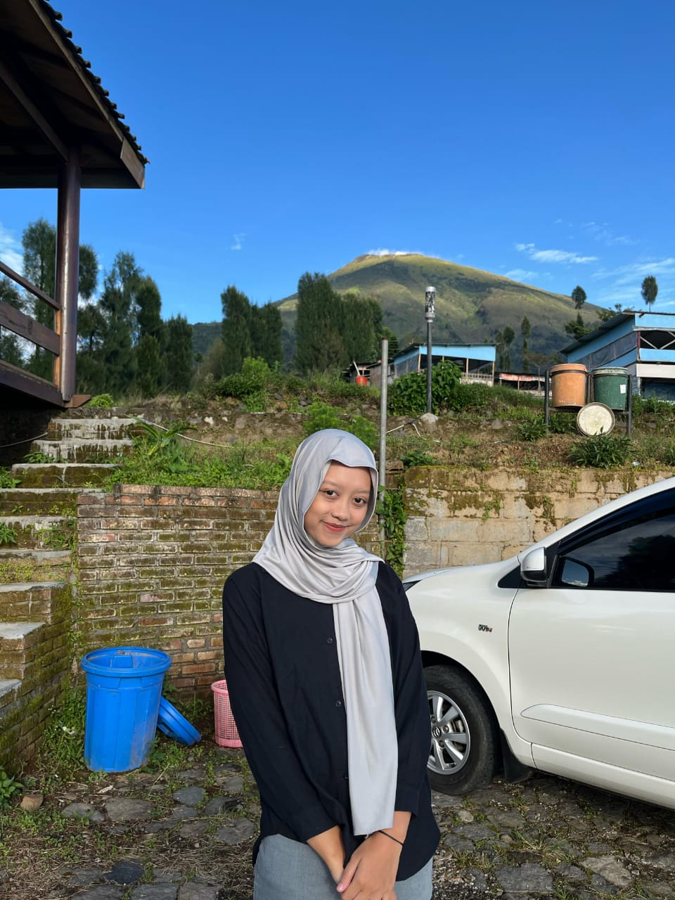
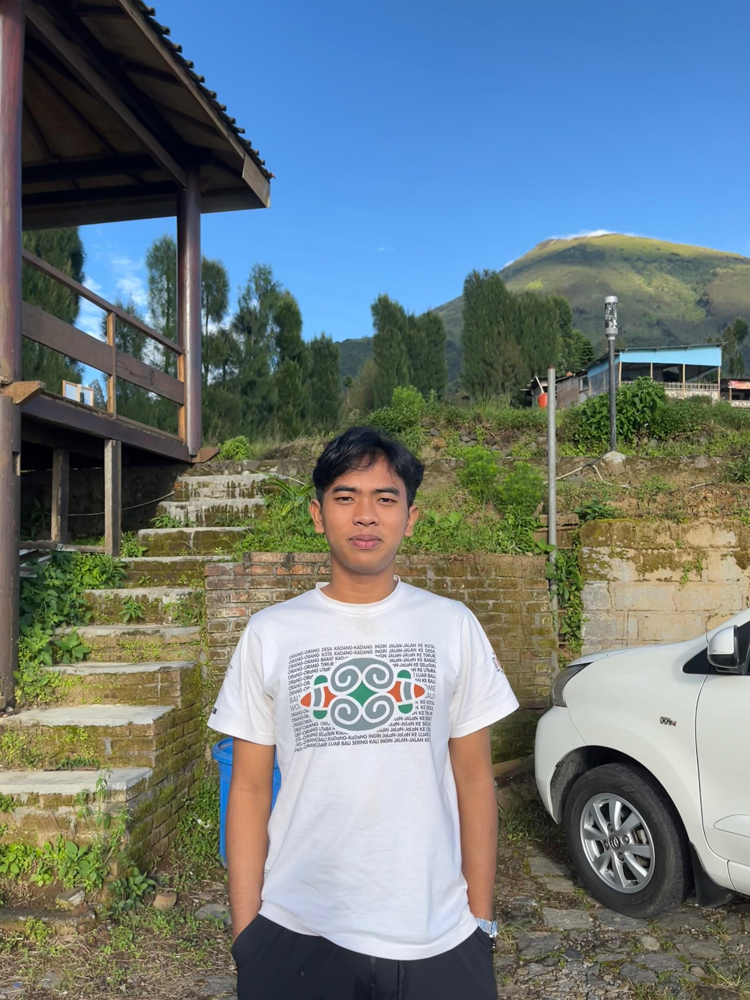

Daftar Pegawai Kelurahan Karangtengah

Devrin Anggun Saputri
Kepala Kelurahan
Salsha Chalista
Sekretaris

Muhammad Abdul Aziz
Bendahara
Raditya
Sek. Pelayanan

Muhammad Eka
Sek. Kependudukan

Atika Aji Hadiyani
Sek. Ekonomi Desa

Rahma Eka Safitri
Sek. Informasi & Layanan